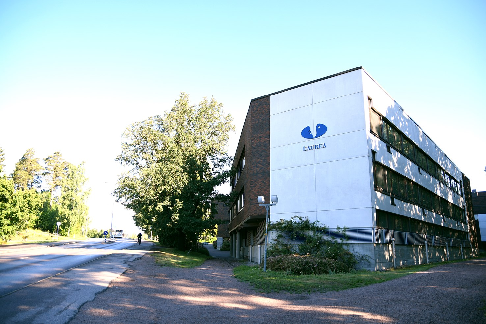
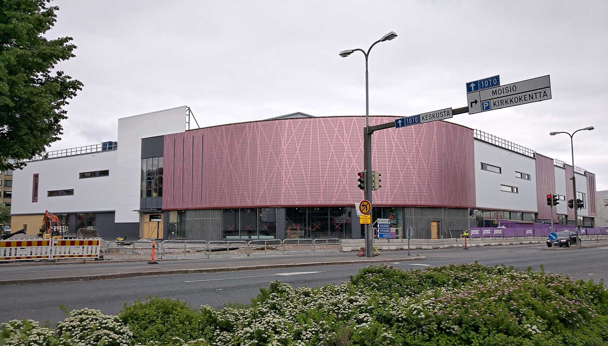

Tikkurilan kampus sijaitsee Itä-Vantaan keskustassa, Tikkurilassa. Kampus on todella keskeisellä paikalla Tikkurilan juna-bussiaseman vieressä, minkä ansiosta sinne on hyvät kulkuyhteydet.

Leppävaara
Leppävaaran kampus sijaitsee Espoossa. Tämän lisäksi Espoossa sijaitsee myös Otaniemen kampus. Espoo on ainut kaupunki, jossa on kaksi Laurean kampusta.

Lohjan kampus
Lohjan kampus on pienempi kampus Lohjalla. Siellä voi opiskella mm. liiketaloutta.